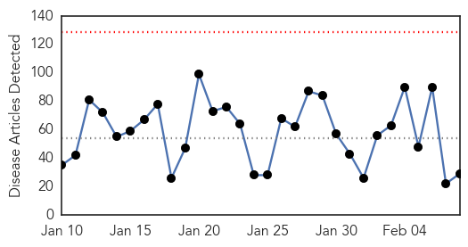
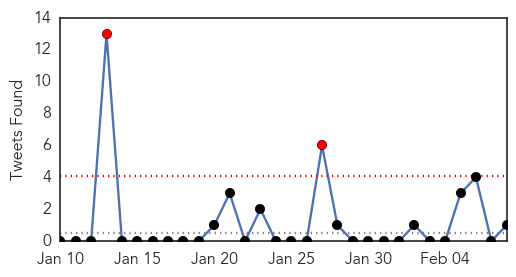
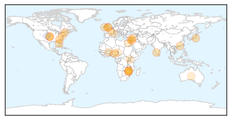
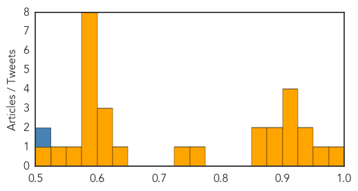

Unknown
30-Day Web Trend
0 alerts, 0 warnings

30-Day Twitter Trend
2 alerts, 0 warnings

Article Locations

Article Confidences
Top Articles:
- 0.981
- The children's wards closing their doors as flu spreads
- 0.958
- Health Department testing more after school TB case
- 0.949
- The Portland Press Herald / Maine Sunday Telegram
- 0.929
- Living Well Notebook: Final week for Obamacare sign-up
- 0.917
- Chicago Tribune
- 0.917
- Chicago Tribune
- 0.917
- Chicago Tribune
- 0.917
- Chicago Tribune
- 0.887
- U.S. Lyme disease costs could exceed 1 billion annually
- 0.886
- HK ICU's At Breaking Point Amid Winter Flu Outbreak
- 0.866
- KFD: expert team visits affected areas
- 0.851
- People die as hospitals run out of drugs, oxygen - Zimbabwe
- 0.751
- US observes 15th National Black HIV
- 0.745
- HSE Issues Health Warning Following Outbreak Of Rare Type Of Chlamydia
- 0.633
- Observer
- 0.620
- NGOs against exporting nurses
- 0.615
- More woods falling victim to ash dieback « Shropshire Star
- 0.615
- ‘Fall proves why Zimbabweans vote for Mugabe’ - Africa
- 0.599
- State media: 'Mugabe's fall shows why Zimbabweans still vote for him'
- 0.579
- 'The party of the year': Carnival kicks off in Venice
- 0.579
- Thousands protest Burkina Faso's presidential guard
- 0.579
- Terror charges for suspect in Nice knife attack
- 0.579
- France detains six from suspected jihadi network
- 0.579
- Four-way summit on Ukraine to be held in Minsk
- 0.579
- Egypt sets retrial date for jailed Al-Jazeera journalists
- 0.579
- Australian PM survives leadership vote
- 0.557
- Mugabe’s fall ‘proves why Zimbabweans vote for him’: state media
- 0.543
- How Insurgency Hinders Polio Progress In North-East
- 0.502
- Northern Voices Online Why The AIDS Epidemic And Conspiracy Theories Abound in Black Population
Top Tweets:
- 0.503
- RT: "3 percent of them were primary cases who probably acquired the infection from contact with camels" MERS CoV Nov2014 http://…
Ebola
30-Day Web Trend
0 alerts, 0 warnings

30-Day Twitter Trend
2 alerts, 0 warnings

Article Locations


Article Confidences

Top Articles:
- 0.997
- Guinea to Expand Use of Experimental Anti-Ebola Drugs
- 0.997
- The Government of Canada announces return of a mobile laboratory from Kailahun, Sierra Leone
- 0.995
- Ebola vaccines testing starts in Liberia
- 0.990
- Guinea To Expand Use Of Experimental Anti-Ebola Drugs
- 0.988
- Government pledges nearly £33m to new Ebola fund
- 0.958
- We must separate fact from fiction on health
- 0.951
- Japan blocks journalist from flying to Syria citing concerns for personal safety
- 0.951
- Former US Federal Reserve head says Eurozone cannot survive with Greece
- 0.951
- US airline execs want government to annul open skies agreement with GCC states
- 0.951
- Jailing of Burundian journalist raises concerns ahead of elections says UN rights office
- 0.951
- Tunisia Arrests 32 Militants, Says It Foiled 'Spectacular' Attacks
- 0.839
- West African communities receiving Ebola’s orphans with open arms
- 0.838
- World leaders meet over safeguarding future global security
- 0.836
- Fort Magsaysay eyed as quarantine area for Ebola patients
- 0.815
- Calgary woman leaves for Ebola-stricken Sierra Leone
- 0.636
- Nobel Laureate Leymah Gbowee Raises Ebola Awareness
- 0.590
- I'll tackle challenges facing West African sub region
- 0.529
- Mahama proposes cooperation against international crisis
- 0.528
- President Mahama feasts with the Diplomatic Corps at Peduase
- 0.521
- Billions Go To Victims Of Disaster And Disease. Does It Really Help?
- 0.521
- Billions Go To Victims Of Disaster And Disease. Does It Really Help?
- 0.521
- Billions Go To Victims Of Disaster And Disease. Does It Really Help?
- 0.521
- Billions Go To Victims Of Disaster And Disease. Does It Really Help?
- 0.521
- Billions Go To Victims Of Disaster And Disease. Does It Really Help?
- 0.521
- Billions Go To Victims Of Disaster And Disease. Does It Really Help?
- 0.505
- 1,000th solar suitcase is a beacon in developing world
- 0.504
- Billions Go To Victims Of Disaster And Disease. Does It Really Help?
Top Tweets:
- 0.637
- Fort Magsaysay eyed as quarantine area for Ebola patients - Philippine Star http://t.co/Wng3ZFRfGv ebola EVD
- 0.595
- [HUFFPOST] Ebola Epidemic Takes a Toll on Sierra Leone's Surgeons http://t.co/gvfq7so2wS EBOLANEWS
- 0.522
- Ebola Challenges Hands-On Tool - New York Times http://t.co/BU9fKskzoH ebola EVD
- 0.514
- Burnings Bombings Ebola: Not All Dramatic Events Are ?Game-Changers? - Daily Beast http://t.co/7MKqWIEMnH ebola EVD
- 0.514
- Burnings Bombings Ebola: Not All Dramatic Events Are ?Game-Changers? - Daily Beast http://t.co/7KMJQKQBQu ebola EVD